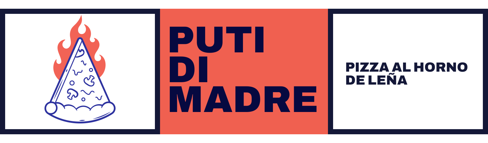
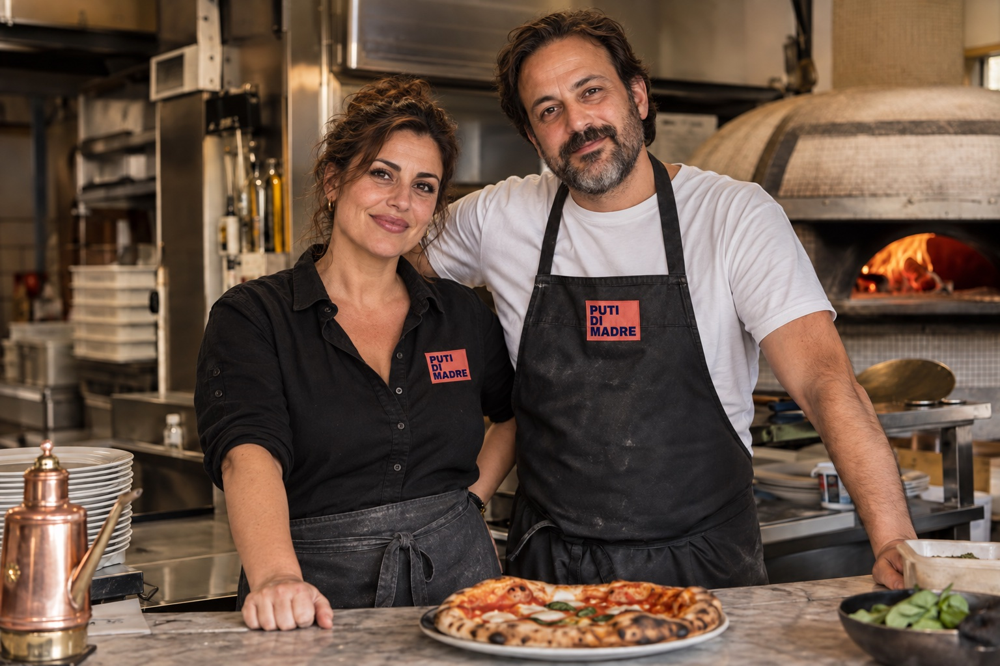

Muy fina de masa.
Poco fina de modales.
Pizza al horno de leña para pedir ahora y recoger cuando esté lista. Sin colas. Sin comisiones.
El manifiesto
No hacemos delivery.
Hacemos pizza.
Si estás cerca, no necesitas que una moto dé una vuelta por ti. Pide, date un paseo y recógela caliente.
Además, Lavapiés se anda en diez minutos y no tiene un tramo feo. Bajas, das la vuelta, se te abre el hambre por el camino y vuelves con la caja caliente en la mano.
Cómo funciona
Tres pasos
y a comer.
-
01
Elige tu pizza
Ves lo que hay ahora mismo. Si algo se ha agotado, te enteras antes de bajar.
-
02
Reserva hueco en el horno
Eliges una franja de quince minutos, solo entre las que el horno puede cumplir.
-
03
Ven a tu hora
Te damos cinco minutos para recogerla. Llega dentro de ellos y te la llevas recién salida: ni ella fría de esperarte, ni tú esperándola.
Pagas al recoger, con tarjeta o efectivo. No te cobramos nada desde esta web.
La carta
Lo que hay hoy.
Solo recogida · Pagas en el local
El merchan
Llévate algo puesto.
Camisetas, delantales y el aceite picante de la mesa. Se añaden a tu caja y los recoges con la pizza. Tampoco los enviamos: seguimos sin tener moto.
Lo que dice el barrio
Cinco vecinos
con opinión.
Reseñas ficticias, y la nota y el número también. Todo escrito para este caso conceptual: el negocio no existe, el enlace a Google no lleva a ninguna parte y nada de esto reproduce opiniones reales de ningún establecimiento.
Quiénes somos

Dónde estamos
Un horno en
Lavapiés.
Después de cenar
FAQ
Preguntas que
nos hacen siempre.
¿Lo vas a seguir
pensando
con hambre?
Tu caja
Comprueba que
está todo.
Elige hora
¿Cuándo vienes
a por ella?
Solo enseñamos horas que el horno puede cumplir.
Tus datos
¿A nombre de quién
sale esta maravilla?
Reservando tu hueco en el horno…
Comprobamos que la franja y los productos siguen libres.